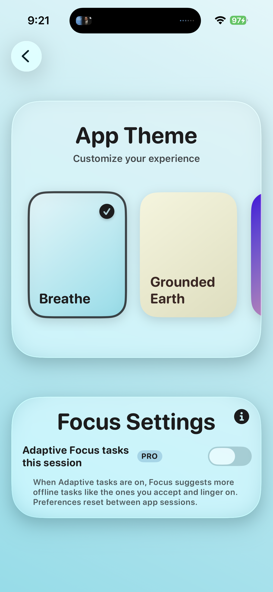
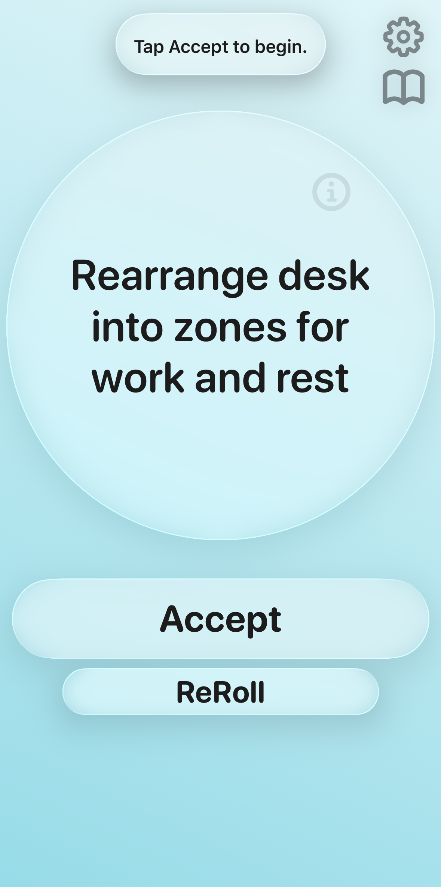
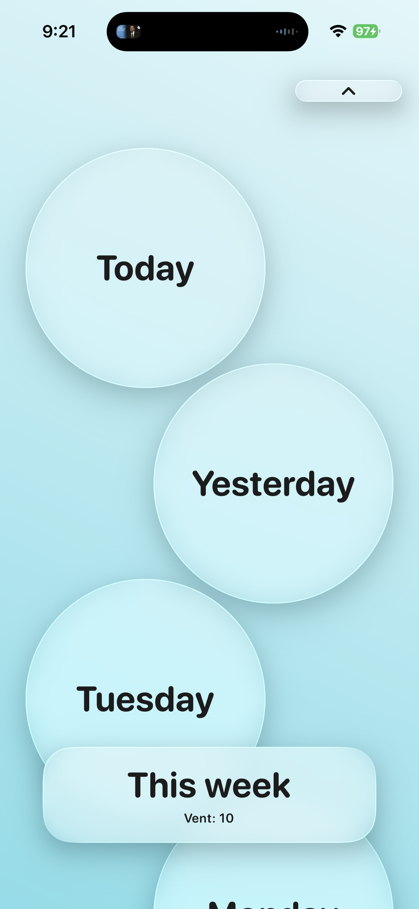

Go deeper with Pivot Pro
Unlock adaptive support and deeper weekly reflection without adding noise to your routine.
What Pro unlocks
- All themes — unlock every app theme beyond the free set.
- Adaptive Focus tasks — Focus suggests more tasks like the ones you accept and linger on.
- AI weekly analysis — on-device reflection on your Focus, Vent & Move week.
Pro keeps the same mission intact: less scrolling, more living through actionable prompts, offline tasks, and a weekly view you can actually use.

Pivot Pro
What weekly analysis gives you
When Pro is enabled, Pivot can generate a short summary of your week based on completed Focus, Vent, and Move sessions. The goal is insight, not overwhelm.
- Highlights the types of Focus tasks you preferred that week.
- Summarizes your Vent reflections (including whether you used AI reflection).
- Summarizes your Move completions and goal outcomes.
Pro in action
Preview the Pro experience across settings, Focus, and Journal.
Pro settings

Adaptive Focus

Weekly analysis
FAQ
Everything about Pro.
No. The core loop (Focus, Vent, and your Journal) works without Pro. Pro adds personalization and on-device weekly analysis.
Adaptive Focus suggests additional offline tasks based on the ones you accept and linger on during your session.
With Pro enabled, Pivot can generate a short weekly summary using your on-device Focus/Vent/Move data.
Built on the same research
Pro extends the same evidence-backed loop behind Focus, Vent, and Move.
Download Pivot, upgrade when ready
Install the core app now and unlock Pro once you want deeper weekly analysis.